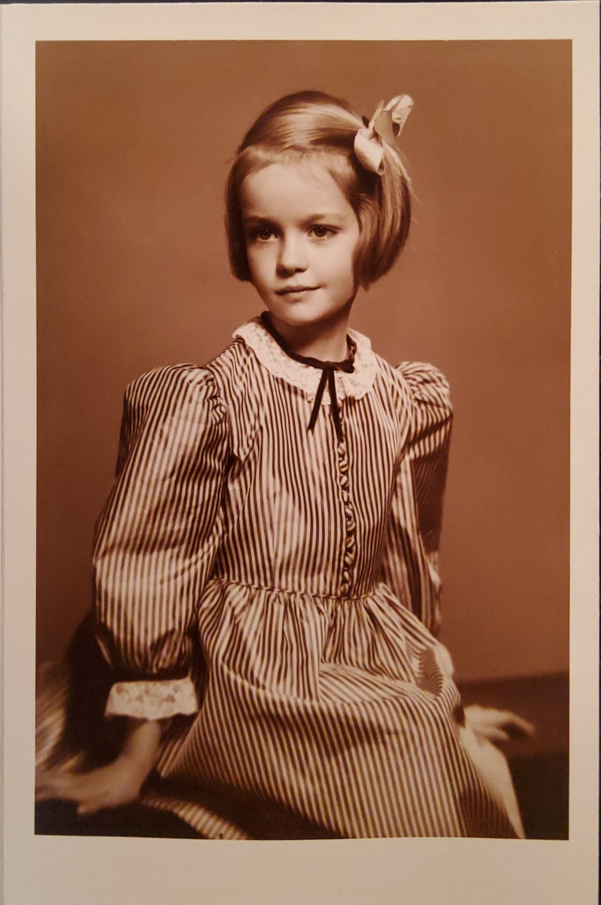

Audio Files - Barr Students and Colleagues
Excerpts from 6 online interviews with Sylvie Beaudette, Kristin Ditlow, Chris Foley, Thomas Lausmann, Alexandra Nguyen and Judy Siebert in 2024.
Interview - Jean Barr
excerpt of a series of in-person interviews with Chanda VanderHart: 14-20 July 2024
Fournier: Correspondence and Images
two letters from Pierre Fournier to Jean Barr; two rehearsal photos.
'The Still Unashamed Accompanist: Tips on becoming a collaborative artist'
MTNA article pre-print, October/November 2000.
Childhood Portraits
Scans of 12 photos of Jean Barr taken annually by Milwaukee-based photographer, Benjamin J. Bertelson between 1944 and 1949.

Carnival Night, 1983
program scan from 'Carnival Night with Jean Barr, Armen Guzelimian & Friends', October 28, 1983, University of Southern California.
MTNA Convention Features Collaborative Artistry
Correspondence and memos from 1998 and 1999.
Milken Archives Recordings
Recordings of works by Leonard Bernstein.
International Workshop Themes 1984-2000
List of themes selected for the International Workshops series run by Gerald Fischbach, where Barr was faculty for two decades beginning in 1984.
Susan B. Anthony Award Notice
Media notice from Eastman School of Music dated 21 January 2004 on Barr's Lifetime Achievement Award.
USC letters
Correspondence and letters of support for Barr and her work at University of Southern California.
'Our Collaborative Piano Ancestors'
Handout prepared by Barr for Collabfest, 2017.